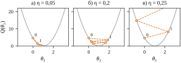
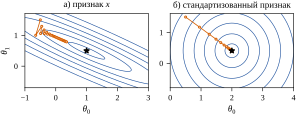
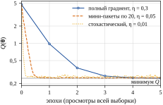

4 Градиентный спуск
В гл. 3 параметры линейной регрессии, минимизирующие эмпирический риск, были получены точно — как решение нормальной системы уравнений. Такое решение в явном виде существует далеко не всегда, и в этой главе описан универсальный способ минимизации функционала качества — градиентный спуск: двигаться к минимуму небольшими шагами, на каждом шаге в направлении, в котором функция убывает быстрее всего.
4.1 Зачем нужны итерации
Формула \boldsymbol{\theta}^* = (\mathbf{F}^{\mathrm{T}} \mathbf{F})^{-1} \mathbf{F}^{\mathrm{T}} \mathbf{y} годится не всегда. Во-первых, она дорогая: при n признаках решение нормальной системы требует порядка n^3 операций, а для вычисления \mathbf{F}^{\mathrm{T}} \mathbf{F} вся выборка должна быть доступна сразу. При сотнях тысяч признаков (например, слов в текстах) или выборке, которая не помещается в память, это непрактично. Во-вторых, для большинства моделей и функций потерь формулы для минимума нет вовсе. Например, для логистической регрессии — одной из основных моделей классификации — уравнение «градиент равен нулю» в явном виде не решается.
Градиентный спуск требует только одного: уметь вычислять градиент \nabla Q в любой точке. Поэтому один и тот же алгоритм обучает как линейную и логистическую регрессию, так и нейронные сети.
4.2 Интуиция на одном параметре
Возьмём три точки (1; 1), (2; 2), (3; 3) и модель без свободного члена g(x, \theta_1) = \theta_1 x. Эмпирический риск
Q(\theta_1) = \frac{1}{3} \sum_{i=1}^{3} (\theta_1 x_i - y_i)^2.
У всех трёх точек y_i = x_i, поэтому \theta_1 x_i - y_i = \theta_1 x_i - x_i = x_i (\theta_1 - 1), и
Q(\theta_1) = \frac{1}{3} \sum_{i=1}^{3} x_i^2 (\theta_1 - 1)^2 = \frac{1 + 4 + 9}{3} (\theta_1 - 1)^2 = \frac{14}{3} (\theta_1 - 1)^2
— парабола с минимумом в точке \theta_1 = 1 (рис. 4.1). Представим, что формулы минимума мы не знаем, но в любой точке можем вычислить производную
Q'(\theta_1) = \frac{28}{3} (\theta_1 - 1).
Знак производной показывает, куда двигаться. Если Q' > 0, функция растёт вправо, и минимум левее — \theta_1 надо уменьшить. Если Q' < 0, минимум правее. Величина |Q'| говорит о крутизне: вдали от минимума склон крутой, вблизи — пологий. Отсюда правило шага:
\theta_1 := \theta_1 - \eta \, Q'(\theta_1),
где \eta > 0 — скорость обучения (learning rate). Шаг автоматически направлен к минимуму и уменьшается по мере приближения к нему.
Пример. Начнём с \theta_1 = 0, где Q'(0) = -28/3 \approx -9{,}33. При \eta = 0{,}05 первый шаг даёт \theta_1 = 0 + 0{,}05 \cdot 9{,}33 = 0{,}467. Далее Q'(0{,}467) = -4{,}98 и \theta_1 = 0{,}467 + 0{,}05 \cdot 4{,}98 = 0{,}716; третий шаг даёт 0{,}848. Расстояние до минимума каждый раз умножается на одно и то же число: \theta_1 - 1 := (1 - 28\eta/3)(\theta_1 - 1), здесь 1 - 28 \cdot 0{,}05/3 \approx 0{,}53 (рис. 4.1, а).
При \eta = 0{,}2 множитель равен 1 - 28 \cdot 0{,}2/3 \approx -0{,}87: отрицательный, но по модулю меньше единицы. Точка перескакивает через минимум (0; 1,867; 0,249; 1,651; …) и приближается к нему медленно, колеблясь (рис. 4.1, б). При \eta = 0{,}25 множитель -1{,}33 по модулю больше единицы: каждый шаг уводит дальше от минимума, процесс расходится (рис. 4.1, в). Спуск сходится, когда |1 - \eta Q''| < 1, то есть при \eta < 2/Q''; здесь Q'' = 28/3 и граница равна 0{,}21. Чем круче парабола, тем меньше допустимый шаг.

4.3 Алгоритм
При нескольких параметрах производная заменяется градиентом — вектором частных производных \nabla Q(\boldsymbol{\theta}) = (\partial Q / \partial \theta_0, \ldots, \partial Q / \partial \theta_n). Градиент направлен в сторону наискорейшего роста функции, а его длина — крутизна склона в этом направлении. Значит, антиградиент -\nabla Q указывает направление наискорейшего убывания. Градиентный спуск повторяет шаг
\boldsymbol{\theta}^{(t+1)} = \boldsymbol{\theta}^{(t)} - \eta \, \nabla Q\bigl(\boldsymbol{\theta}^{(t)}\bigr),\tag{4.1}
где t = 0, 1, 2, \ldots — номер шага (итерации), а \boldsymbol{\theta}^{(0)} — начальное приближение.
Читаем формулу. Для каждого параметра \theta_j шаг выполняется по своей частной производной: \theta_j^{(t+1)} = \theta_j^{(t)} - \eta \, \partial Q / \partial \theta_j. Все производные вычисляются в одной и той же точке \boldsymbol{\theta}^{(t)}, и только потом обновляются все параметры. Если обновить \theta_0 и сразу использовать новое значение при вычислении производной по \theta_1, получится другой алгоритм, не градиентный спуск. В коде это значит: сначала вычислить весь вектор градиента, затем изменить вектор параметров.
Когда остановиться. Обычно используют одно или несколько условий:
- градиент стал мал: \|\nabla Q\|_2 < \delta — точка близка к минимуму, где градиент равен нулю;
- за шаг почти не изменились Q или параметры;
- достигнуто наибольшее допустимое число шагов.
Выбор скорости обучения. Пример разд. 4.2 показывает три режима. Если \eta слишком мала, спуск сходится, но требует очень многих шагов. Если \eta велика, параметры колеблются вокруг минимума; если ещё больше — Q растёт с каждым шагом, и вскоре наступает переполнение. Практический способ — попробовать несколько значений через порядок (0,001; 0,01; 0,1; 1) и посмотреть на кривую обучения — график Q от номера шага. Кривая должна монотонно убывать; рост Q — верный признак слишком большой \eta.
В некоторых книгах эмпирический риск записывают с множителем 1/(2\ell) вместо 1/\ell: двойка от производной квадрата сокращается. Точка минимума от этого не меняется, но градиент уменьшается вдвое, поэтому одно и то же значение \eta даёт разные шаги. Сравнивая скорости обучения из разных источников, нужно учитывать, как там записан Q.
Локальные минимумы. Эмпирический риск линейной регрессии — «чаша» с единственным минимумом, и спуск при подходящем \eta приходит в него из любой начальной точки. У других моделей функция Q может иметь несколько локальных минимумов; тогда результат зависит от начального приближения, и спуск запускают несколько раз из разных случайных точек (мультистарт).
4.4 Градиентный спуск для линейной регрессии
Для линейной модели с квадратичной потерей градиент найден в гл. 3, формула (3.3). Подставим его в (4.1):
\boldsymbol{\theta}^{(t+1)} = \boldsymbol{\theta}^{(t)} - \frac{2\eta}{\ell} \, \mathbf{F}^{\mathrm{T}} \bigl(\mathbf{F}\boldsymbol{\theta}^{(t)} - \mathbf{y}\bigr).\tag{4.2}
Покомпонентно:
\theta_j^{(t+1)} = \theta_j^{(t)} - \frac{2\eta}{\ell} \sum_{i=1}^{\ell} \bigl(g(x_i, \boldsymbol{\theta}^{(t)}) - y_i\bigr) f_j(x_i), \quad j = 0, \ldots, n.
Читаем формулу. Шаг для веса \theta_j — сумма по объектам произведений остатка на значение j-го признака. Если модель на объекте завышает ответ (остаток положителен), а признак положителен, вес уменьшается, и прогноз на этом объекте снижается. Объекты с большими остатками влияют на шаг сильнее. Когда остатки «уравновешены» — ортогональны всем столбцам \mathbf{F}, — шаг равен нулю: это и есть нормальная система.
Одна итерация требует двух умножений матрицы на вектор, порядка \ell n операций, — гораздо меньше, чем n^3 для точного решения при большом n. В NumPy формула (4.2) записывается одной строкой (листинг 4.1). Цикл по объектам и признакам на Python работал бы в сотни раз медленнее: операции над массивами NumPy выполняются скомпилированными библиотеками линейной алгебры (BLAS, LAPACK). Такую запись называют векторизованной.
Листинг 4.1. Градиентный спуск для линейной регрессии
import numpy as np
def gradient_descent(F, y, eta=0.1, steps=1000, tol=1e-6):
ell, p = F.shape # F — со столбцом f0 = 1
theta = np.zeros(p)
for t in range(steps):
grad = 2 / ell * F.T @ (F @ theta - y)
theta = theta - eta * grad # все параметры сразу
if np.linalg.norm(grad) < tol:
break
return thetaПример. Для трёх точек (1; 1), (2; 3), (3; 2) из примера гл. 3 минимум Q находится в точке \boldsymbol{\theta}^* = (1;\, 0{,}5). На рис. 4.2, а показаны 25 шагов спуска с \eta = 0{,}15. Линии уровня — вытянутые эллипсы. Антиградиент перпендикулярен линии уровня и направлен не в центр, а поперёк эллипса; траектория сначала колеблется поперёк «оврага», а затем медленно ползёт вдоль его дна. После 25 шагов до минимума остаётся около 40 % начального расстояния.

Причина — разная крутизна Q по разным направлениям. Вдоль крутого направления допустимый шаг мал (иначе — расходимость, как в разд. 4.2), а вдоль пологого такой шаг слишком мал для быстрого продвижения. Отношение крутизны по самому крутому и самому пологому направлениям — число обусловленности \kappa(\mathbf{F}^{\mathrm{T}} \mathbf{F}) из гл. 3; здесь оно около 46. Чем оно больше, тем больше шагов нужно спуску, причём число шагов растёт примерно пропорционально \kappa.
4.5 Стохастический и мини-пакетный спуск
Градиент в (4.2) — сумма по всем \ell объектам. При миллионах объектов каждый шаг требует прохода по всей выборке, а шагов нужны сотни. Стохастический градиентный спуск (stochastic gradient descent, SGD) делает шаг по градиенту потери на одном случайно выбранном объекте:
\boldsymbol{\theta} := \boldsymbol{\theta} - \eta \, \nabla \mathcal{L}_i(\boldsymbol{\theta}), \qquad \nabla \mathcal{L}_i(\boldsymbol{\theta}) = 2 \bigl(\langle \boldsymbol{\theta}, \mathbf{x}_i \rangle - y_i\bigr) \mathbf{x}_i,
где \mathcal{L}_i(\boldsymbol{\theta}) = (\langle \boldsymbol{\theta}, \mathbf{x}_i \rangle - y_i)^2 — квадратичная потеря на объекте x_i.
Читаем формулу. Метод рассматривает один объект и сдвигает веса так, чтобы ошибка на нём уменьшилась: шаг пропорционален остатку и направлен вдоль признакового описания объекта. Если объект выбран случайно и равновероятно, градиент потери на нём в среднем равен градиенту Q: Q — среднее потерь, а производная среднего — среднее производных. Отдельный шаг может и увеличить Q, но в среднем шаги ведут к минимуму, а каждый стоит в \ell раз дешевле.
На практике объект не выбирают заново случайно на каждом шаге: выборку перемешивают и проходят по порядку. Один проход по всей выборке называют эпохой. Компромисс между полным и стохастическим градиентом — мини-пакетный спуск: шаг по среднему градиенту на пакете (mini-batch; в литературе часто встречается калька «мини-батч») из B объектов, обычно от десятков до сотен. Усреднение по пакету уменьшает шум, а вычисления над пакетом векторизуются так же, как в листинге 4.1.
На рис. 4.3 сравниваются три способа на синтетической задаче с \ell = 1000 объектов и пятью признаками. За эпоху полный градиент делает один шаг, мини-пакетный — 50, стохастический — 1000. Поэтому за первую эпоху стохастический и мини-пакетный спуск почти доходят до минимума, а полному градиенту нужно несколько эпох. Зато кривые стохастических методов «шумят»: при постоянной \eta параметры не останавливаются в минимуме, а блуждают вокруг него, потому что градиент на одном объекте не обращается в нуль даже в точке минимума Q.

Убывающая скорость обучения. Чтобы блуждание затухало, \eta уменьшают с номером шага t. Стохастический спуск для выпуклой функции сходится к минимуму, если выполнены условия Роббинса — Монро:
\eta_t \to 0, \qquad \sum_{t=1}^{\infty} \eta_t = \infty, \qquad \sum_{t=1}^{\infty} \eta_t^2 < \infty.
Первое и третье условия гасят шум: шаги становятся всё мельче. Второе не даёт шагам уменьшиться слишком быстро: их сумма бесконечна, поэтому из любой начальной точки можно дойти до минимума. Подходит, например, \eta_t = \eta_0 / t: гармонический ряд \sum 1/t расходится, а ряд \sum 1/t^2 сходится.
Оценка Q на лету. Вычислять Q по всей выборке после каждого шага SGD дорого — это лишает метод смысла. Поэтому Q оценивают по потерям на тех объектах, по которым уже сделаны шаги, экспоненциальным скользящим средним:
\bar Q := \beta \, \mathcal{L}_i + (1 - \beta) \, \bar Q,
где \mathcal{L}_i — потеря на текущем объекте, вычисленная до шага, а \beta \in (0, 1) — скорость забывания. Новое значение входит в оценку с весом \beta, предыдущее — с весом \beta(1 - \beta), ещё более раннее — \beta(1 - \beta)^2 и т. д. При \beta = 0{,}01 оценка примерно отражает среднюю потерю на последней сотне объектов. По \bar Q строят кривую обучения и проверяют условие остановки.
Стохастический спуск позволяет обучать модель на данных, которые поступают потоком, и доучивать её на новых объектах без повторного обучения на всей выборке. Платой служит набор настроек — скорость обучения и закон её убывания, размер пакета, число эпох, — которые подбирают экспериментально.
4.6 Практические приёмы
Масштабирование признаков. Пример на рис. 4.2 показывает, почему перед градиентным спуском признаки стандартизуют (гл. 2). Если признаки измерены в разных единицах (площадь в квадратных метрах, этаж, доля), Q по одним весам гораздо круче, чем по другим, линии уровня вытянуты, а число обусловленности велико. После стандартизации признака из примера столбцы \mathbf{F} становятся ортогональными, линии уровня — окружностями (рис. 4.2, б), \kappa = 1, и антиградиент направлен прямо в минимум: за 25 шагов с тем же \eta = 0{,}15 спуск приходит в минимум с точностью до 10^{-4}. На практике столбцы не бывают в точности ортогональными, но стандартизация обычно уменьшает \kappa на порядки. Решение, найденное по стандартизованным признакам, затем пересчитывают в исходные единицы или, что проще, применяют модель вместе с тем же преобразованием признаков (конвейер scikit-learn).
Начальное приближение. Для линейной регрессии подходит \boldsymbol{\theta}^{(0)} = \mathbf{0}: функция выпукла, и от начальной точки зависит лишь число шагов. Можно взять и небольшие случайные значения или решение, полученное на небольшой подвыборке. Для невыпуклых функций потерь, например в нейронных сетях, начальное приближение влияет на результат, и там его выбирают случайно по особым правилам.
scikit-learn. Стохастический спуск для линейной
регрессии реализован в классе SGDRegressor (листинг 4.2).
По умолчанию он добавляет к Q небольшой
штраф за большие веса (регуляризацию) и уменьшает скорость обучения с
номером шага; параметр penalty=None отключает штраф.
Масштабирование признаков выполняется в том же конвейере.
Листинг 4.2. Стохастический градиентный спуск в scikit-learn
from sklearn.linear_model import SGDRegressor
from sklearn.pipeline import make_pipeline
from sklearn.preprocessing import StandardScaler
model = make_pipeline(
StandardScaler(),
SGDRegressor(penalty=None, eta0=0.01, max_iter=1000,
tol=1e-4, random_state=0))
model.fit(X_train, y_train)Для небольших задач линейной регрессии, где признаков не больше
нескольких тысяч, быстрее и точнее решить нормальную систему
(LinearRegression, гл. 3). Градиентный спуск нужен, когда
данных много, когда они поступают потоком, или когда формулы для
минимума нет.
Вопросы для самоконтроля
- В каких случаях градиентный спуск предпочтительнее решения нормальной системы?
- Почему шаг градиентного спуска делают против градиента, а не вдоль него?
- Что произойдёт при слишком малой и при слишком большой скорости обучения? Как это увидеть на кривой обучения?
- Почему все параметры нужно обновлять одновременно?
- Почему градиент потери на одном случайном объекте в среднем совпадает с градиентом эмпирического риска?
- Зачем при стохастическом спуске уменьшают скорость обучения? Какие условия накладывают на последовательность \eta_t?
- Как масштаб признаков влияет на скорость сходимости?
Задачи
Для модели g(x) = \theta_1 x и точек (1; 1), (2; 2), (3; 3) сделайте два шага градиентного спуска из \theta_1 = 2 при \eta = 0{,}1.
Ответ
на каждом шаге отклонение \theta_1 - 1 умножается на 1 - 28 \cdot 0{,}1/3 \approx 0{,}067: \theta_1 \approx 1{,}067, затем \approx 1{,}004.
При каких \eta градиентный спуск для функции Q(\theta) = a\theta^2, a > 0, сходится? При каком \eta он приходит в минимум за один шаг?
Ответ
при 0 < \eta < 1/a; за один шаг — при \eta = 1/(2a).
Для точек (1; 1), (2; 3), (3; 2) и модели \theta_0 + \theta_1 x сделайте один шаг градиентного спуска из \boldsymbol{\theta} = (0;\, 0) при \eta = 0{,}1.
Ответ
в точке \boldsymbol{\theta} = (0;\, 0) градиент \nabla Q = -\frac{2}{3} \mathbf{F}^{\mathrm{T}} \mathbf{y} = (-4;\, -8{,}67); \boldsymbol{\theta} = (0{,}4;\, 0{,}87).
Сделайте один шаг стохастического спуска для той же модели из \boldsymbol{\theta} = (1;\, 0{,}5) по объекту (2; 3) при \eta = 0{,}1. Почему параметры изменились, хотя (1;\, 0{,}5) — минимум Q?
Ответ
прогноз 1 + 0{,}5 \cdot 2 = 2, остаток 2 - 3 = -1, градиент 2 \cdot (-1) \cdot (1;\, 2) = (-2;\, -4), \boldsymbol{\theta} = (1{,}2;\, 0{,}9); градиент потери на одном объекте в минимуме Q не равен нулю.